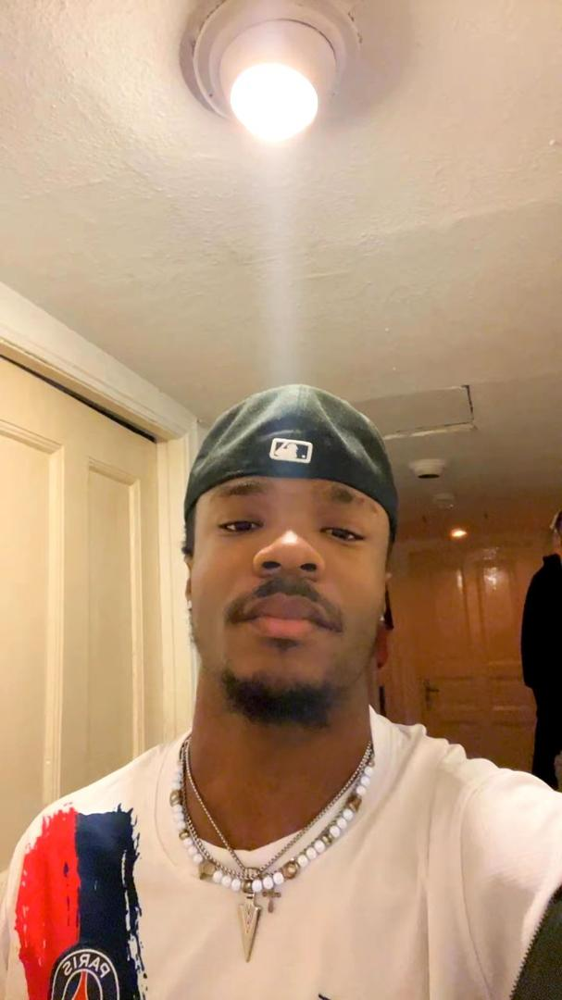

My name is Marius Chibuike Ogowuihe and i am 21 years old. I am from Nigeria and I reside in Berlin, Germany at the moment because of my studies. i'm pursuing a barchelor's degree in software engineering at GISMA. I speak fluent English, i speak German as well but not so perfect. I am very passionate for tech, and I enjoy coding and building projects which involves vast creativity. i formerly worked as an intern in a tech company in Nigeria and by working there i was able to hone my skills in the field of tech but now i am in Germany, i am looking for an internship to also further my experiences in my field of study. i am a very determined and hardworking student, who strives to achieve positive goals in life and I am interested in software engineering beacuse it teaches alot about problem solving with creativity and non stop learning. and it has a huge real world apllication and that's what makes it much more rewarding. I have one of my python project added to my websites, it is a weather dashboard for Berlin, you can find it below.
I have alot of hobbies. Aside my passion for tech, I also love playing football. I love coding, I love reading quite often because I like knowing new things and I believe that knowledge is priceless. I also like playing video games, playing music and building new tech, and i'm hoping that one day, i'd help build a tech that would be life changing for humanity
I formerly studied in Nigeria where I completed a total of 12 years education. 6 years for primary school, 6 years for secondary and later on, I devoted extra 2 years for my software engineering training but now I'm currently enrolled at GISMA university of applied sciences which is located in Germany, Berlin. And through my previous experiences, I can boldly say I’m well versed in the art of python and css programming language.
Here is my recent python project: My pthon project
More Information: My CV